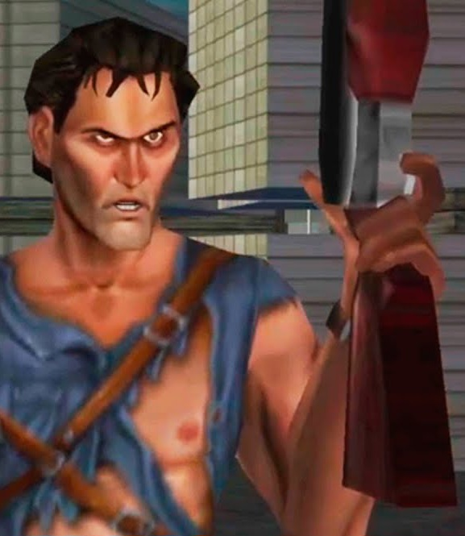
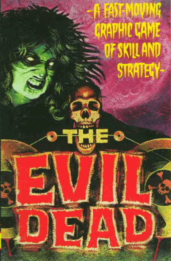
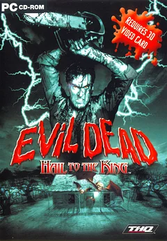
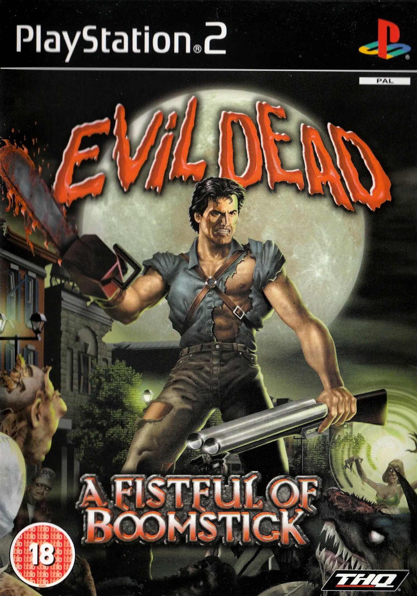
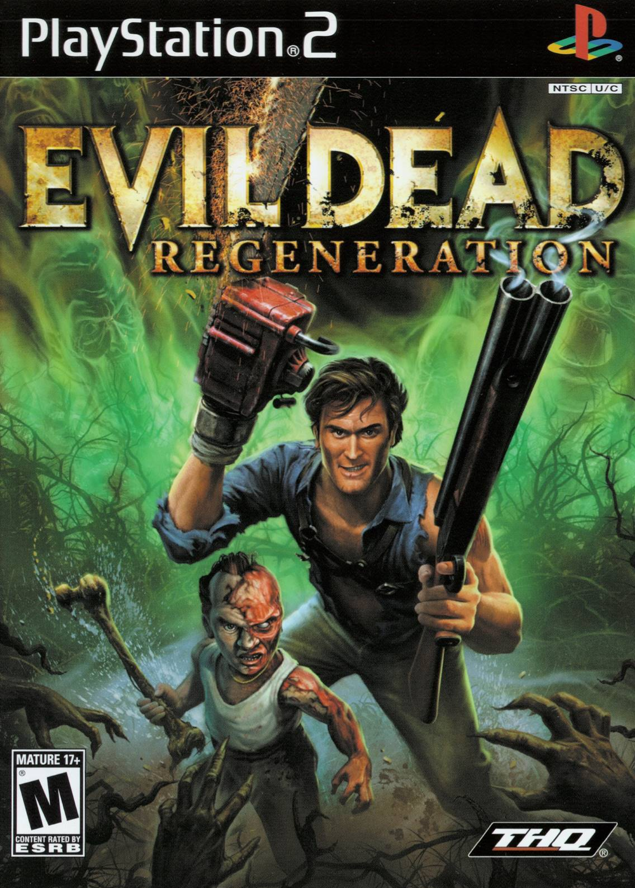
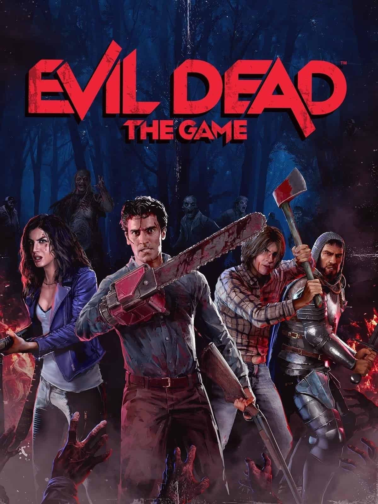

Welcome to the Evil Dead Video Game Archive. Explore the interactive history of the Deadites, from the earliest audio adventure based on the original film, through Ash Williams' battles across consoles and into the modern era of survival horror gaming. Choose your game below and enter the world of Naturom Demonto... but remember, the Book of the Dead has consequences.


The first Evil Dead video game adaptation, released as a cassette-based adventure. Players take control of Ash Williams as he explores the cabin and battles the forces unleashed by the Necronomicon.

Released as a survival horror adventure, Hail to the King returned Ash Williams to the cabin years after his original encounter with the Deadites, featuring exploration, puzzles and terrifying enemies.

Ash Williams returns to action when a mysterious reading of the Necronomicon unleashes another Deadite invasion. Armed with his legendary boomstick and new abilities, Ash must battle through the town of Dearborn and stop the forces of darkness.

A twisted alternate story where Ash is sent to an asylum after the events of Army of Darkness. With the help of the miniature Deadite Sam, Ash fights through hordes of enemies while trying to prevent the Necronomicon from falling into evil hands.

A multiplayer survival horror experience bringing together characters from across the Evil Dead universe. Players battle Deadites, explore iconic locations and fight to survive against the power of the Kandarian Demon.